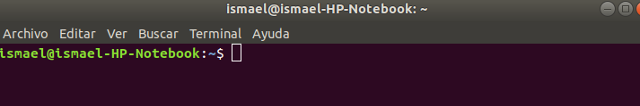
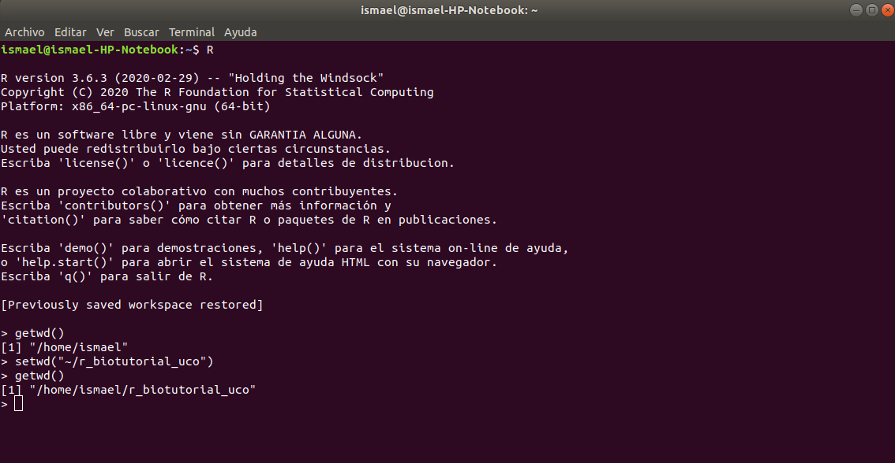

Conceptos básicos
R puede ejecutarse desde la terminal o símbolo del sistema de nuestro sistema operativo, que se puede abrir en Linux tecleando secuencialmente ctrl + alt + t o, como en cualquier sistema operativo, tras una simple búsqueda en el sistema. La forma de abrir una sesión de R en la terminal es introduciendo el comando R en el prompt, es decir, el carácter o conjunto de caracteres, generalmente >, en Windows, o ~$, en Linux, y un cursor parpadeante, que se muestran en una línea de comandos para indicar que está a la espera de órdenes.

Para salir de la sesión de R y volver al terminal de Linux debes indicar la orden >q(). Otro modo de recurrir al lenguaje de programación R sería ejecutando R -q –-vanilla -e 'orden deseada'. No obstante, es frecuente el empleo de un entorno de desarrollo integrado (IDE) o interfaz que facilite su uso, como RStudio. Cabe mencionar que cuando se está llevando a cabo una operación con R y se pretende abandonar su acción antes de que finalice, se presiona la tecla ESC, si estás en RStudio, o ctrl + c, para la terminal.
Todo aquello que es creado en una sesión de R permanece sólo en ella, es decir, no es compartido entre sesiones, aunque se encuentren activas simultáneamente o se sitúen en el mismo directorio, término extendido coloquialmente como carpeta de trabajo o archivos. El hecho de saber el directorio donde se encuentra la línea de comandos es imprescindible, ya que se trabaja a partir de éste, a no ser que se indique lo contrario. Para ello, ha de ejecutarse getwd(). Si se desea cambiar de directorio, se ejecutaría setwd(). Dicho esto, se recomienda practicar este tutorial siempre en el mismo directorio. La forma de crear un directorio desde R en la ruta donde se encuentra es mediante dir.create(). En cambio, si se quiere eliminar algún archivo sería a través de file.remove(). Si optas por cambiar de nombre el archivo, puede aplicar file.rename(), indicando primeramente el archivo y seguidamente el nombre nuevo. Para conocer los archivos o los subdirectorios del directorio donde se encuentra abierta la sesión, se ejecuta list.files() y list.dirs(), de forma respectiva. En cambio, si se pretende descubrir los elementos que contiene nuestra sesión se ejecuta ls(), que muestra una lista con los nombres de todo lo que ha sido guardado durante ella. De hecho, cuando se cierra la sesión de R, se pregunta si se desea guardar el contenido creado en ella para recurrir a éste en otras ocasiones, generando y actualizando un archivo con extensión .Rdata en el directorio de trabajo. Las distintas opciones mencionadas requieren incluir entre comillas la ruta donde se pretende hacer la modificación.

¡Es tu momento! Abre una sesión de R, dirígete hacia el directorio que desees, creándolo o renombrándolo si fuese necesario, y comprueba su contenido antes de finalizar la sesión.
Ejemplo
1 2 3 4 5 6 7 8 | |
Info
Estas acciones pueden realizarse desde la terminal sin necesidad de llevarlas a cabo en una sesión de R. Los comandos serían los siguientes:
| Comando | Función |
|---|---|
pwd |
Localizar el directorio donde se encuentra |
ls |
Visualizar su contenido |
cd ruta |
Cambiar de directorio |
mkdir nombre |
Crear un directorio |
rm -r nombre |
Borrar directorio y su contenido |
En programación se emplea una jerga que a principiantes podría resultar dificultoso su entendimiento. Un ejemplo que debe ser conocido antes de profundizar en la materia es el uso de los verbos llamar, correr y ejecutar, los cuales son referidos para que el lenguaje que se esté utilizando realice una acción con la instrucción o entrada ("input") que se mencione. A partir de ella, se genera una salida ("output") que sería el resultado de la operación, para lo que se utiliza el verbo devolver. En ocasiones, un segmento de código se repite, lo que se conoce como iteración. Hay que tener en cuenta el símbolo #, conocido como corchete o "hashtag", el cual suele introducirse en funciones para incluir comentarios del código y que no sean ejecutados.
Funciones y ayuda¶
Las operaciones a ejecutar, junto a ciertas especificaciones denominadas argumento, se pueden asignar a un nombre, lo que se llama función, la cual realiza las operaciones que contiene cuando se llama, por lo que se recomienda que su nombre represente o describa significativamente las operaciones, para que no surjan dudas de su acción. Las funciones se muestran de la siguiente forma: nombre_función().
Existen ciertas funciones básicas que R reconoce desde un principio, como el cálculo de la media, el cuantil y el tamaño o longitud de un objeto. Como se ha dicho, los nombres son descriptivos, por lo que las operaciones que lleva a cabo se deducen a simple vista, pero cuando se está indeciso sobre ellas, se puede recurrir a su documentación, ya que todas las funciones tienen uno de estos archivos que describe lo que realiza la función y detalles sobre sus argumentos, las operaciones y los resultados que devuelve, e incluye ejemplos de uso. La forma de acudir a este documento es situando el nombre dentro de la función help() o escribiendo el operador interrogativo ? antes de su nombre. Si se utilizan en la terminal, para abandonar la documentación se pulsa ↑ + q.
¿Qué operaciones realizarían las funciones Las tres primeras se han mencionado anteriormente como funciones básicas en el mismo orden que se preguntan, aunque si no se está seguro se puede recurrir a su documentación. mean(), quantile(), length(), summary() y sd()?Respuesta
summary() y sd() podrían llevar a duda, por lo que se van a utilizar como ejemplo de acceso a documentación. 1
2
help(summary)
?sd()
Bibliotecas¶
Las funciones pueden estar contenidas en paquetes, es decir, colecciones de funciones diseñadas para realizar tareas específicas, como podría ser alineamiento genómico o análisis de expresión genética. Estos paquetes se encuentran disponibles en repositorios como bioconductor, el cual proporciona herramientas para el ámbito de la bioinformática e investigación biomédica. La forma de acceder a las funciones de estos paquetes es a través de la función library(), la cual se debe llamar cada vez que se inicie sesión en R. Para que reconozca el paquete de funciones, éste debería ser instalado previamente mediante la función install.packages(). Otras funciones como installed.packages() y sessionInfo() permiten conocer qué paquetes están instalados en el sistema y cuáles están activos en la sesión abierta, respectivamente. Si se quiere actualizar un paquete ya instalado, se emplea la función update.packages(). Todas estas funciones requieren indicar el paquete entre comillas.
Comprueba si tienes instalados y actualizados las bibliotecas graphics y tidyverse. Si no fuese así, intenta instalarlas, ya que serán utilizadas durante el tutorial. Accede al paquete stringr de tidyverse.
Método
1 2 3 4 | |
Descarga de ficheros¶
En una sesión de R se pueden descargar archivos mediante la función download.file(), indicando en el argumento url la dirección de internet donde se encuentra el archivo que se pretende descargar, y en destfile el nombre con el que se quiera guardar el archivo en el ordenador, ambos entre comillas.
Ejemplo
1 | |
Scripts en R¶
Un script es un archivo que inicialmente se puede crear con un editor de texto plano como gedit en Linux, o como notepad en Windows, y se guarda con la extensión .R. Éste puede ser ejecutado en R usando la función source(), incluyendo la ruta del archivo entre comillas. Comúnmente, el script incluye en su inicio la llamada a paquetes (library()) que el usuario podría no tener instalados. Para que se muestre directamente algún elemento del script, se debe incluir una función de salida como print(), la cual devuelve el elemento que se introduzca en ella, o cat(), con la que se puede devolver un conjunto de elementos de forma secuencial. Además, los scripts suelen utilizarse para operar con elementos que elige el usuario. El modo de pedir un "input" es incluyendo en el código del script una función de entrada como scan(), para números reales, o readline(), para caracteres, y asignarlos a una variable.
Ejemplo
1 2 3 4 | |
Info
La función scan() permite indicar entre el paréntesis el número de entradas que podrías realizar. En caso de no hacerlo, podrias llevar a cabo las entradas que desees hasta que introduzcas una entrada vacía, finalizando el proceso de esta función.
La función cat() no permite incluir ciertas estructuras de control como argumento, por ejemplo, las listas.
¿Cómo mostrarías el mensaje "¡Hola Mundo!" por la pantalla?
Respuesta
1 2 | |
Enlaces de interés
-
Material del curso Informática aplicada a la Bioquímica. Manuel Jesús Marín Jiménez, Universidad de Córdoba.